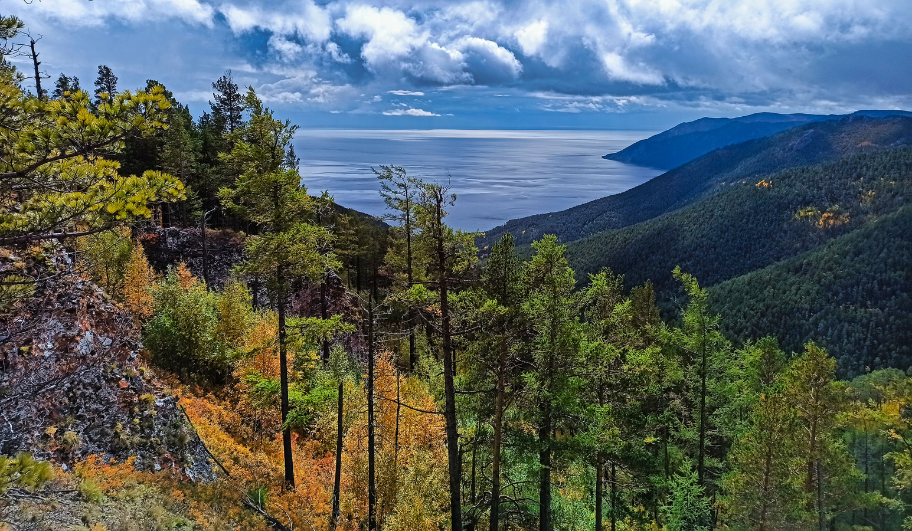

Большое Голоустное




📍 Подробное описание маршрута
Маршрут начинается в городе Иркутск и проходит по Качугскому тракту в западном направлении. После выезда из городской зоны дорога постепенно переходит в лесные массивы, характерные для Прибайкалья. По пути движение проходит через участки смешанной тайги, где плотность населённых пунктов постепенно снижается.
Примерно через 100–120 километров маршрут приводит в район посёлка Большое Голоустное, расположенного на берегу Байкала в устье реки Голоустная. Эта территория входит в состав Прибайкальского национального парка, что определяет ограниченную застройку и сохранение природного ландшафта.
После въезда в посёлок маршрут делится на несколько направлений: к береговой линии Байкала, в сторону долины реки Голоустная и на возвышенности Приморского хребта. Береговая зона отличается широкими галечными участками и прямым выходом к открытому Байкалу без портовой инфраструктуры.
Дополнительным природным объектом в окрестностях является Сухое озеро — карстовая впадина, которая периодически наполняется водой в зависимости от сезона и уровня грунтовых вод.
📌 Ключевые точки
- Качугский тракт (основная транспортная артерия маршрута)
- Посёлок Большое Голоустное
- Устье реки Голоустная
- Береговая линия Байкала
- Сухое озеро (сезонный объект)
- Склоны Приморского хребта
🎯 Активности на маршруте
- Пешее перемещение от посёлка к берегу Байкала
- Подъём на природные обзорные точки над долиной реки
- Исследование береговой линии без застройки
- Посещение района Сухого озера
- Фотосъёмка природных объектов национального парка
📍 Расстояние
≈120 км от Иркутска
🚗 Маршрут
Иркутск → Качугский тракт → Большое Голоустное
🌿 Сезон
Июнь – Сентябрь
💡 Практическая информация
- Инфраструктура ограничена за пределами посёлка
- Связь нестабильна в прибрежной зоне
- Доступ к Сухому озеру зависит от сезона
- Рекомендуется учитывать погодные условия Байкала
- Оптимальное время посещения — утренние часы